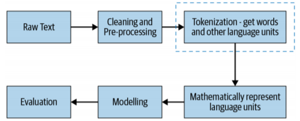
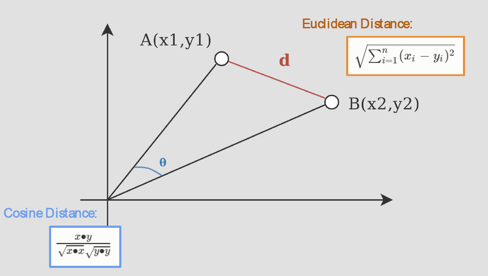

4.1 Text Representation: Introduction
Why models need numbers, and the families of representations.
1. Why text has to become numbers
A classifier, a ranker, or a neural net does not read English. It reads vectors. Week 4 is the map from raw text to those vectors.
The pipeline is always the same shape. You clean the text, split it into units, turn those units into numbers, fit a model, and score the model. This week is the third box: represent the language units mathematically.

Images already arrive as numbers (pixel intensities). Text does not. You have to choose a scheme.
Three families show up in this course:
| Family | What you store | When you use it |
|---|---|---|
| Basic vectorization | Counts or indicators over a vocabulary | Fast baselines, sparse linear models |
| Distributed representations | Dense vectors learned from context | Similarity, neural models |
| Handcrafted features | Lengths, lexicons, metadata | Classification when you know the domain |
Notes 4.2–4.5 are the basic schemes. Week 5 is the dense ones.
The main text is Practical Natural Language Processing (Vajjala, Majumder, Gupta, Surana).
2. What a representation has to do
Suppose the job is sentiment. To get the label right, the system has to get at the meaning of the sentence. A useful representation makes these four things easy to recover:
- the lexical units (words, subwords, phrases)
- a usable meaning for each unit
- the syntax (who did what to whom)
- the context the sentence sits in
If the scheme cannot support those, the model is guessing from a bag of tokens. That can still work for spam. It fails for anything that depends on order or rare words.
3. A running toy corpus
Every note this week uses the same four documents after lowercasing and stripping punctuation:
| Doc | Text |
|---|---|
| (D_1) | dog bites man |
| (D_2) | man bites dog |
| (D_3) | dog eats meat |
| (D_4) | man eats food |
Vocabulary, in first-seen order: [dog, bites, man, eats, meat, food]. Size (|V| = 6).
Keep this table. One-hot, bag of words, n-grams, and TF–IDF are all encodings of these four lines.
4. Comparing two documents
Once each document is a vector, you need a number that says how alike two vectors are.
Euclidean distance is the straight-line length between the two tips. It is the “natural” distance, and it blows up when the vectors have different magnitudes. A long review and a short review about the same product look far apart just because one has more counts.
Cosine similarity looks at the angle from the origin. (\cos 0 = 1). Two documents that use the same words in the same proportions score high even if one is longer. For count vectors, that is usually what you want.

The formula on the cosine side of that figure is similarity, not distance. If you need a distance, use (1 - \text{cosine similarity}).
Rule of thumb for this course: cosine for text counts and embeddings; Euclidean only when length itself is a feature you care about.
5. What this week is for
By the end of Week 4 you should be able to:
- say why a model needs a text representation
- write a one-hot matrix and a bag-of-words vector by hand on a tiny corpus
- explain what an n-gram buys you that a unigram bag does not
- compute a TF–IDF weight and say what the IDF term is doing
- pick cosine or Euclidean and defend the choice
Note 4.2 starts with the simplest encoding: one-hot vectors.
6. Practice
-
A 2,000-word essay and a 200-word paragraph use the same words in the same proportions. Why can Euclidean distance call them dissimilar while cosine calls them similar?
-
Name one thing a bag of words cannot recover from (D_1) versus (D_2).
-
Pixel values are already numbers. What extra job does text representation have to do that an image pipeline does not?